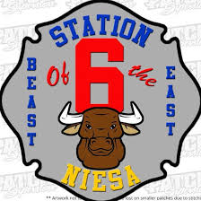

Friday, September 27th, 2019
- Ox Burgers Served @ Noon
- Carnival Rides
- Arts & Crafts in Pole Barns
- Webberville Lions Club Social Barn
- Live Music @ 6: Handsome Pete- Merchant Drawing Between Sets
Sunday, September 30th, 2019
- Webberville FFA Chicken BBQ @ Noon

Saterday, September 28th, 2019
- Kids Parade @ 9AM
- Carnival Rides
- Ox Burgers @ Noon
- Arts & Crafts in Pole Barn
- Webberville Lions Club Social Barn
- Main Parade on Grand River @ 2PM - Grand Marshal: Tom Coe
- Country Line Pullers Tractor Pull @ 3PM
- Ox Burger Eating Contest
- Live Music @ 6PM: Hollywood & Vinyl - Merchant Drawing Between Sets
Hosted at N.I.E.S.A. Station 6/Leroy Township Fire Department:
315 Walnut St, Webberville, MI 48892
The LTFD Firefighter's Association thanks you for your
continuous support of the Ox Roast. Your contributions have made a
significant impact on our department and community! 73 years strong!
If want to know more or to help out contact:
Leroy Township Fire